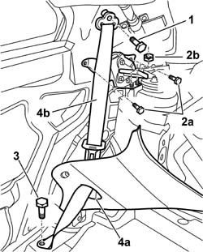
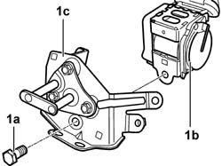

7065B10 L/H OR R/H REAR SAFETY BELT (ONE) - R+R
- Path
- Procedures > 70 FITTINGS > 7065 SEAT BELTS AND ACCESSORIES > 7065B REAR SAFETY BELTS > 7065B10 L/H OR R/H REAR SAFETY BELT (ONE) - R+R
- Kind
- repair procedure (removal / refitting; the operation number is the code)
- Applies to
- all engines; all production periods
- Interactive page
- https://sloeber94.github.io/elrnDB-aGt/en/#/125001989
Applies to: all engines; all production periods
 Removing
Removing
 Refitting
RefittingOp. 7040B10 LOAD PLATFORM (LUGGAGE PLATFORM) TRIM - R+R
Op. 7040B22 LUGGAGE COMPARTMENT/LOAD PLATFORM MOULDING - R+R
Op. 7050A22 REAR SEAT CUSHION - R+R
Op. 7050A14 SPLIT REAR SEAT ASSEMBLY - R+R
Op. 7040G30 BOOT LIGHT BULB HOLDER - R R
(right side)
Op. 7065C86 BOOT/LOAD PLATFORM POWER UNIT HOUSING - R R
(left side)
Op. 5570T85 CD/AUDIO PLAYER LOADER - R R
(left side)
Op. 7040B35 One luggage compartment COMPARTMENT left or right RR
Op. 7040B06 SIDE TRIM (ONE) LH OR RH, LOAD COMPARTMENT/LOAD PLATFORM - R R
1. Undo the upper bolt fastening the seat belt.
2. Undo the bolts (2a) and the nuts (2b) fixing the bracket and reel to the bodyshell.
3. Undo the lower seat belt retaining bolt.
4. Remove the lower seat belt branch via the special slot in the rear pillar trim (4a), then remove the rear seat belt complete with reel (4b) and mounting bracket.

Applies to: all engines; all production periods
1. At the bench, undo the bolt (1a) and separate the reel (1b) fromthe mounting bracket (1c).

Applies to: all engines; all production periods
Refitting
RemovingCheck that the seat belt is undamaged.
Position the reel on the mounting bracket and tighten the fixing bolts to the recommended torque.
 | Fastening | Component | Ø | Value (daNm) |
|---|---|---|---|---|
- | Bolt | REAR SEAT BELT REEL. | M7/16'' | (On bracket 4 |
Position the reel complete with bracket in the vehicle.
Tighten the bolts fixing the reel mounting bracket to the bodyshell to torque.
| Fastening | Component | Ø | Value (daNm) |
|---|---|---|---|---|
- | Bolt | REAR SEAT BELT REEL MOUNTING BRACKET/..... | M8 | (To bodyshell 2 |
Tighten the nuts fixing the reel mounting bracket to the turret to the recommended torque.
| Fastening | Component | Ø | Value (daNm) |
|---|---|---|---|---|
- | Nut | REAR SEAT BELT REEL MOUNTING BRACKET/..... | M8 | (To turret 2 |
Tighten the upper bolt fixing the rear seat belt to the bodyshell to the recommended torque.
| Fastening | Component | Ø | Value (daNm) |
|---|---|---|---|---|
- | Bolt | SIDE REAR SEAT BELT | M7/16'' | (Upper 4 |
Pass the lower seat belt branch through the slot in the rear pillar trim.
Tighten the lower bolt fixing the rear seat belt to the bodyshell to the recommended torque.
| Fastening | Component | Ø | Value (daNm) |
|---|---|---|---|---|
- | Bolt | SIDE REAR SEAT BELT | M7/16'' | (Lower 4 |
Op. 7040B06 SIDE TRIM (ONE) LH OR RH, LOAD COMPARTMENT/LOAD PLATFORM - R R
Op. 7040B35 One luggage compartment COMPARTMENT left or right RR
Op. 5570T85 CD/AUDIO PLAYER LOADER - R R
(left side)
Op. 7065C86 BOOT/LOAD PLATFORM POWER UNIT HOUSING - R R
(left side)
Op. 7040G30 BOOT LIGHT BULB HOLDER - R R
(right side)
Op. 7050A14 SPLIT REAR SEAT ASSEMBLY - R+R
Op. 7050A22 REAR SEAT CUSHION - R+R
Op. 7040B22 LUGGAGE COMPARTMENT/LOAD PLATFORM MOULDING - R+R
Topics linked from this page (11)
- 5570T85 CD/AUDIO PLAYER LOADER - R R
- 7040B06 SIDE TRIM (ONE) LH OR RH, LOAD COMPARTMENT/LOAD PLATFORM - R R
- 7040B10 LOAD PLATFORM (LUGGAGE PLATFORM) TRIM - R+R
- 7040B22 LUGGAGE COMPARTMENT/LOAD PLATFORM MOULDING - R+R
- 7040B35 One luggage compartment COMPARTMENT left or right RR
- 7040G30 BOOT LIGHT BULB HOLDER - R R
- 7040H50 REAR PANEL - R R
- 7040H80 PARCEL RACK
- 7050A14 SPLIT REAR SEAT ASSEMBLY - R+R
- 7050A22 REAR SEAT CUSHION - R+R
- 7065C86 BOOT/LOAD PLATFORM POWER UNIT HOUSING - R R